Färska skärmbilder i Firefox (Playwright), egen isolerad rigg, master e7e01906, zoom 1,0, bredd 1280 och 390. Alla bilder i originalstorlek (sidan krymper dem bara om fönstret är smalare). Fixturer: README.md i samma mapp.
Svara med koden: t.ex. “A3 ok, A7 för mörk, A14 behöver egen ton”. Allt som saknar kod nedan är inte fångat — se längst ned.
B11 keryx-release: the notice "A new keryx is out"
B1 · Builders and Workshop (byggare-verkstad)
Bedöm: Build queue with one active and two waiting builds, the Shipyard and Workshop rows in the city grid (workers placed), the Construct panel, and the Codex article "workshop". Is it clear that more builders = faster work, and which build is running?
1280 px
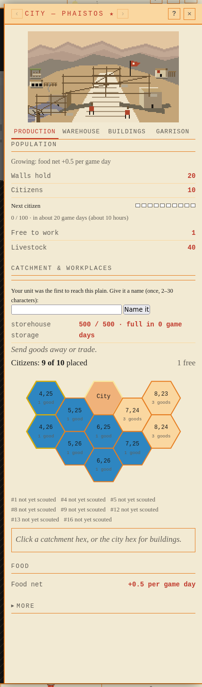
B1-1280-production · City drawer, Production tab: the city grid with the Shipyard and Workshop rows and their placed workers
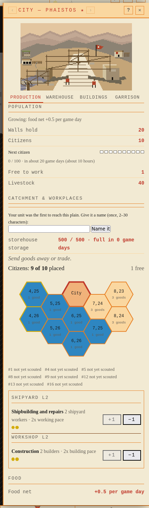
B1-1280-grid-city · Production tab after clicking the City hex: the Shipyard and Workshop rows (workers placed, pace)
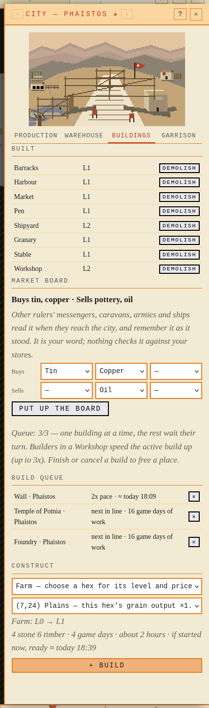
B1-1280-buildings · Buildings tab: Built list, Queue 3/3 note, the build queue (one active, two "next in line") and the Construct panel
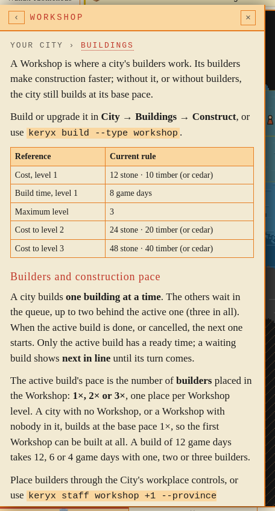
B1-1280-codex · Codex article "workshop"
390 px
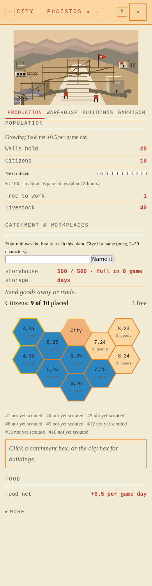
B1-390-production · City drawer, Production tab: the city grid with the Shipyard and Workshop rows and their placed workers
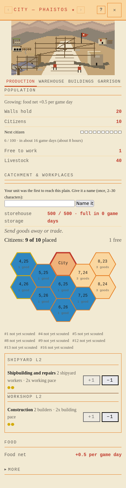
B1-390-grid-city · Production tab after clicking the City hex: the Shipyard and Workshop rows (workers placed, pace)
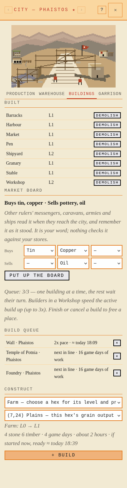
B1-390-buildings · Buildings tab: Built list, Queue 3/3 note, the build queue (one active, two "next in line") and the Construct panel
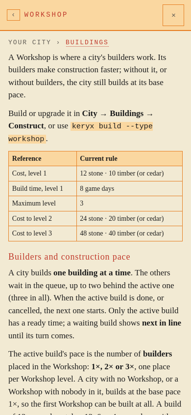
B1-390-codex · Codex article "workshop"
B2 · Prayers 2a: the target chooser (The Young God's Arm, Stout Hulls) and the warded-storm notice
Bedöm: Kult -> Prayers: the offering row of The Young God's Arm with its three steps (one named unit / this city's / whole realm) and the gift multiplier per step, then the same for Stout Hulls (ships). Last: the storm notice when a Sea Daimons blessing took the blow. Is it clear who is blessed and that wider = dearer?
1280 px
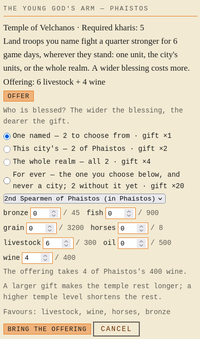
B2-1280-arm-unit · The Young God's Arm, step "One named" (default): a unit to choose from, gift x1
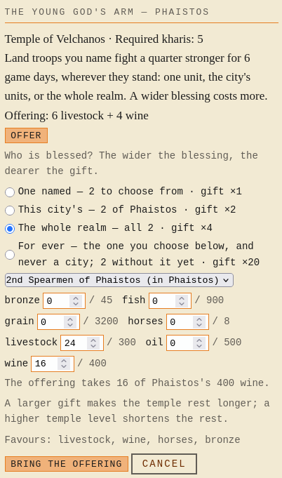
B2-1280-arm-realm · The Young God's Arm with "The whole realm" chosen: the fields follow the step (gift x4)
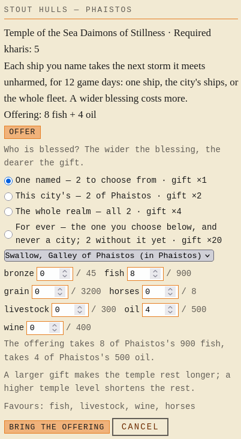
B2-1280-hulls · Stout Hulls: ships to choose from, steps unit / city / fleet
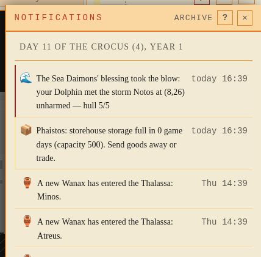
B2-1280-notice · Notifications: the Sea Daimons' blessing took the blow (storm notice, ship warded)
390 px
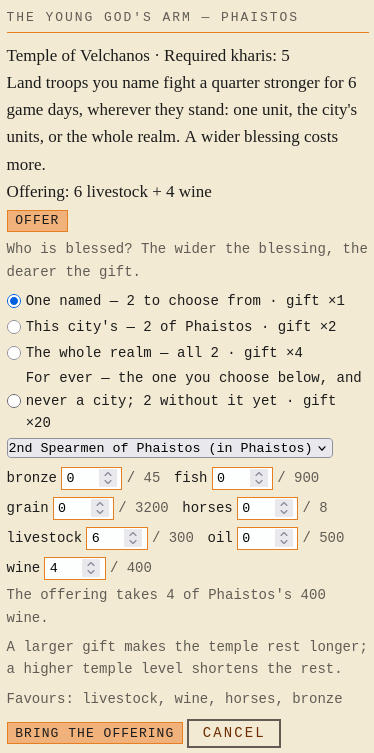
B2-390-arm-unit · The Young God's Arm, step "One named" (default): a unit to choose from, gift x1
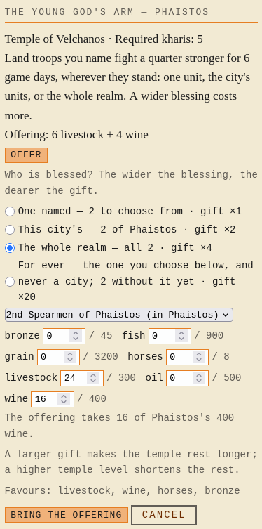
B2-390-arm-realm · The Young God's Arm with "The whole realm" chosen: the fields follow the step (gift x4)
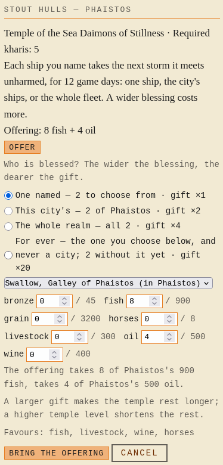
B2-390-hulls · Stout Hulls: ships to choose from, steps unit / city / fleet
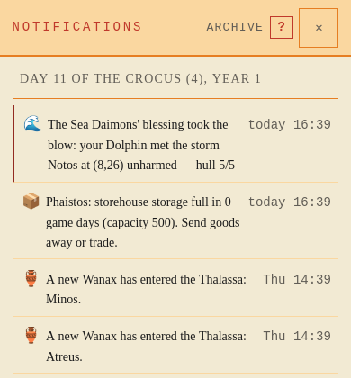
B2-390-notice · Notifications: the Sea Daimons' blessing took the blow (storm notice, ship warded)
B3 · Prayers 2b: the target chooser of Swift Feet and Following Seas
Bedöm: Swift Feet (Runners and land caravans) and Following Seas (ships): the offering row with the steps. For Swift Feet the city and realm steps are always open (they hold for departures too), the unit step lists Runners/caravans on the road. Is it clear what is blessed and for how long?
1280 px
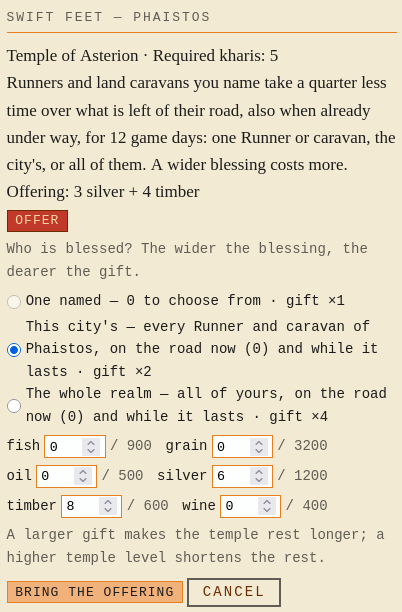
B3-1280-swift-feet · Swift Feet: steps one Runner or caravan / this city's / all of yours, always open for city and realm
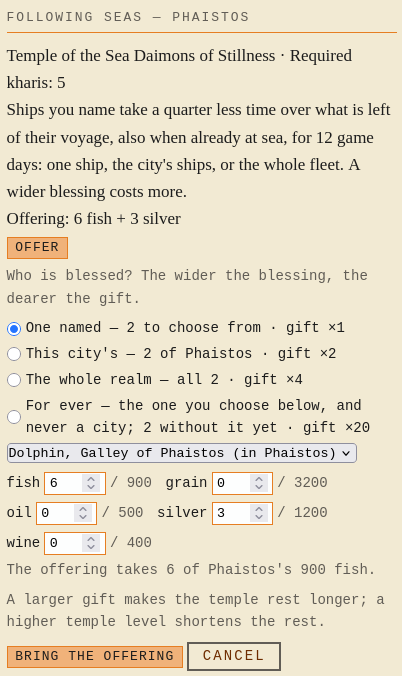
B3-1280-following-seas · Following Seas: ships to choose from, steps unit / city / fleet
390 px
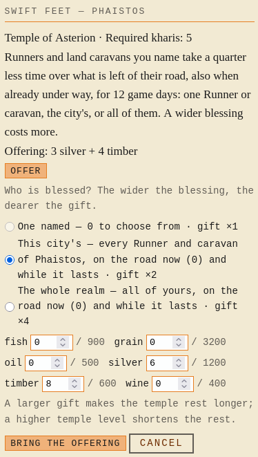
B3-390-swift-feet · Swift Feet: steps one Runner or caravan / this city's / all of yours, always open for city and realm
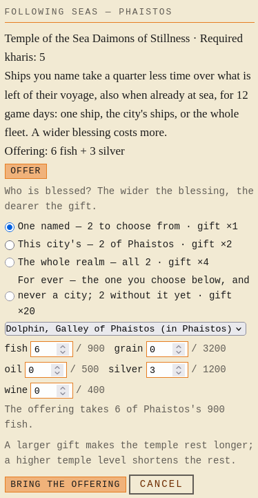
B3-390-following-seas · Following Seas: ships to choose from, steps unit / city / fleet
B4 · Storms 3a: shrunk storms and a dead storm's memory
Bedöm: The map with named storms: one of 2 hexes and one of 1 hex (live, in sight), and the grey memory cloud of a storm that died while out of sight. Do the small storms still read as storms, and is the remembered one clearly grey/old?
1280 px
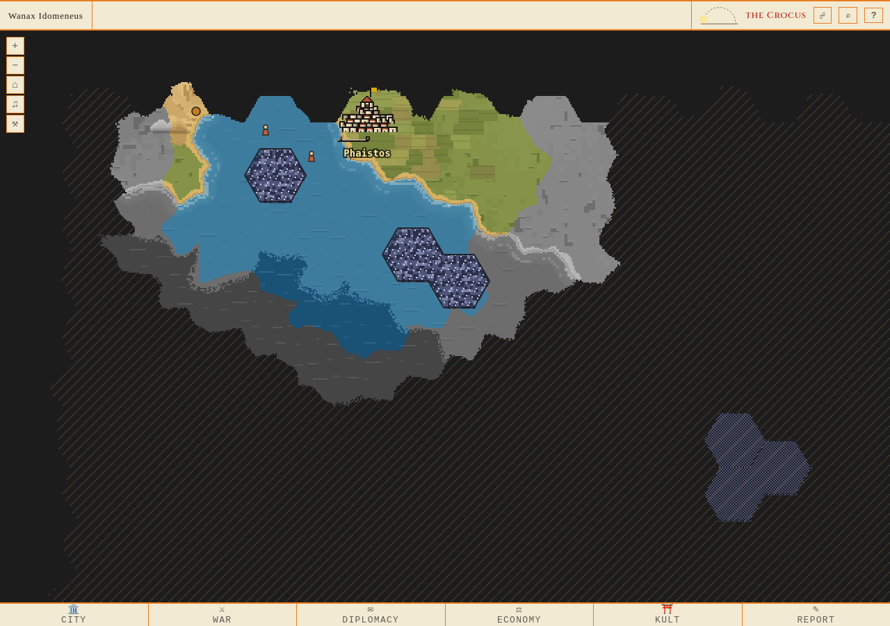
B4-1280-live · Two live storms south of Phaistos: Notos (2 hexes, right) and Kaikias (1 hex, left)
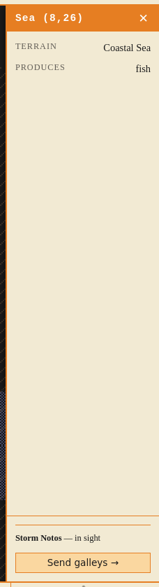
B4-1280-panel · Hex panel on one hex of Notos
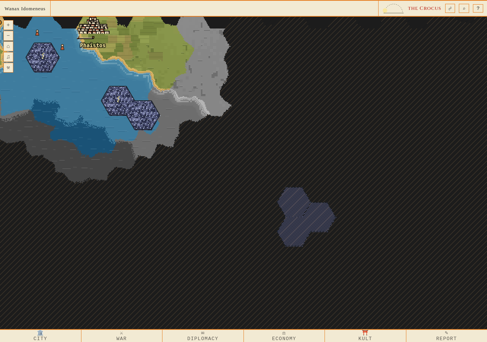
B4-1280-memory · Zephyros, a storm that died while out of sight: its memory cloud (grey, dithered)
390 px
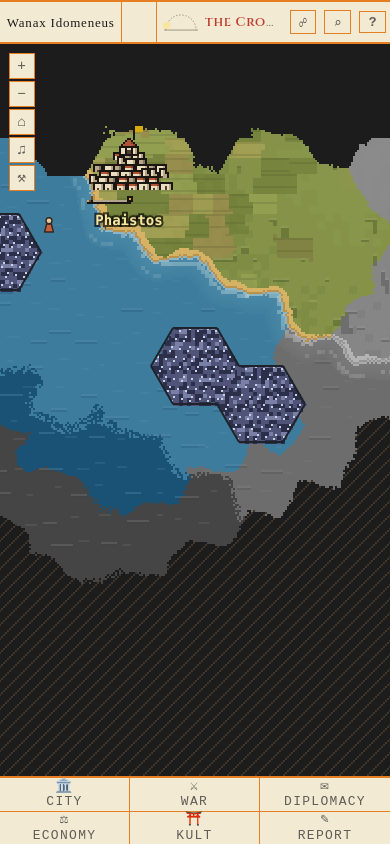
B4-390-live · Two live storms south of Phaistos: Notos (2 hexes, right) and Kaikias (1 hex, left)
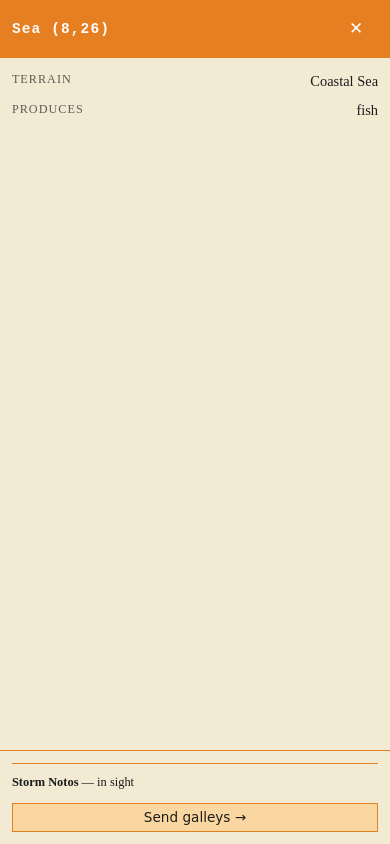
B4-390-panel · Hex panel on one hex of Notos
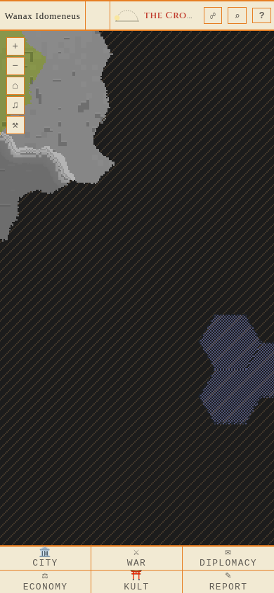
B4-390-memory · Zephyros, a storm that died while out of sight: its memory cloud (grey, dithered)
B5 · Storms 3b: Still the Storm (storm chooser) and Wake the Storm (hex field)
Bedöm: Kult -> Prayers: Still the Storm lists the storms you have named and keep on your storm map; Wake the Storm asks for a sea hex as q,r. Is the instruction text clear, is the field usable?
1280 px
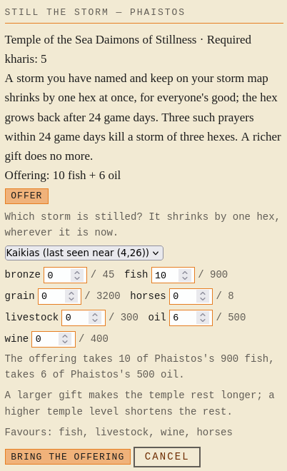
B5-1280-still · Still the Storm: choose one of your named storms (with where it was last seen)
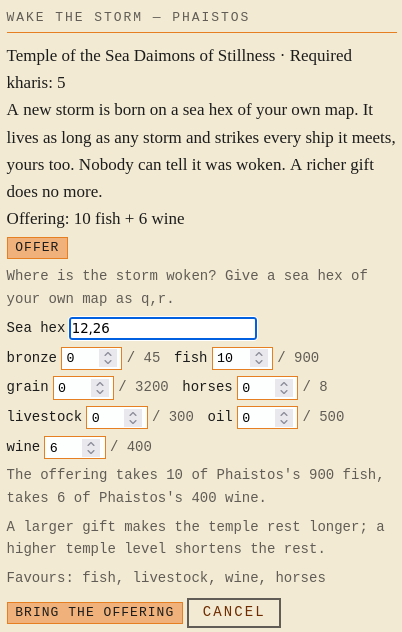
B5-1280-wake · Wake the Storm: the hex field filled in as q,r
390 px
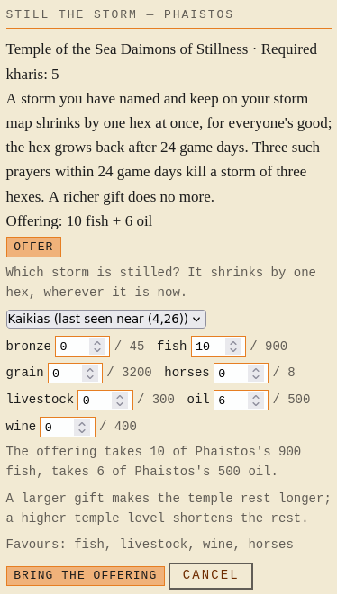
B5-390-still · Still the Storm: choose one of your named storms (with where it was last seen)
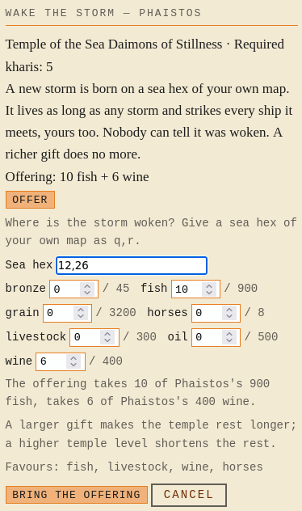
B5-390-wake · Wake the Storm: the hex field filled in as q,r
B6 · Prayers 4: Stout Hulls for ever (permanent) and the ship's card
Bedöm: Stout Hulls with its fourth step "For ever" (gift x20, one named ship, never a city), then the card of that ship after the prayer: "hull 6/6" and the blessing "Stout Hulls for ever". Does the card make the permanent plank obvious?
1280 px
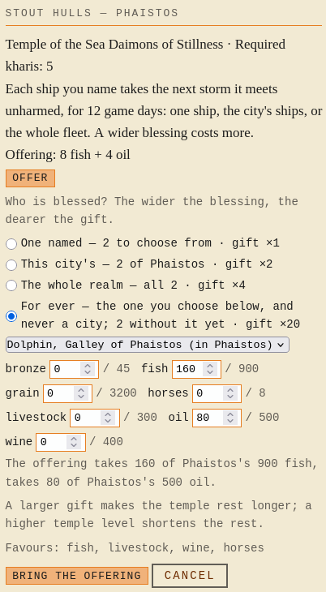
B6-1280-forever · Stout Hulls with "For ever" chosen: the ship to choose, gift x20
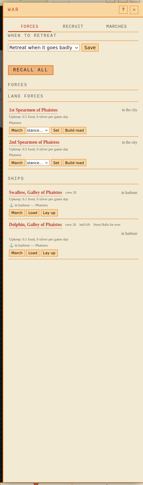
B6-1280-card · War drawer, Forces tab: Dolphin after the prayer (hull 6/6, Stout Hulls for ever) beside Swallow (an ordinary hull)
390 px
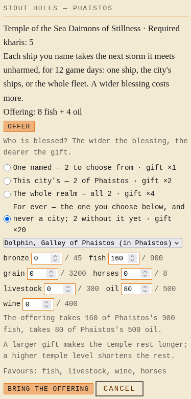
B6-390-forever · Stout Hulls with "For ever" chosen: the ship to choose, gift x20
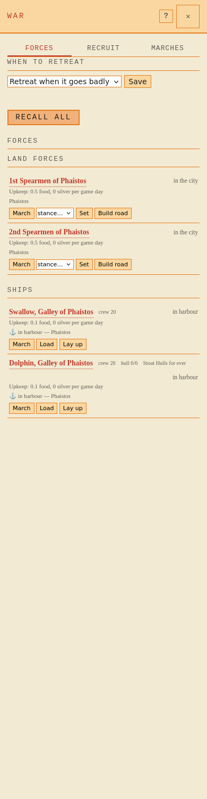
B6-390-card · War drawer, Forces tab: Dolphin after the prayer (hull 6/6, Stout Hulls for ever) beside Swallow (an ordinary hull)
B7 · Prayers 5a: Fruitful Season, Builder's Blessing, the Scapegoat
Bedöm: The Scapegoat chooser (realm only, gift x4); then, after Fruitful Season and the Builder's Blessing are laid on Phaistos, the city's production panel and the build queue with the blessing marker and a new finish time; Kult -> Kharis with the goat's row; and the notice when the gods' anger fell on the goat instead. Do the blessings show where the player looks for them?
1280 px
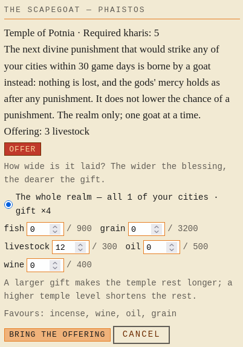
B7-1280-goat-chooser · The Scapegoat: one step only (the realm), gift x4 (3 livestock x4 = 12)
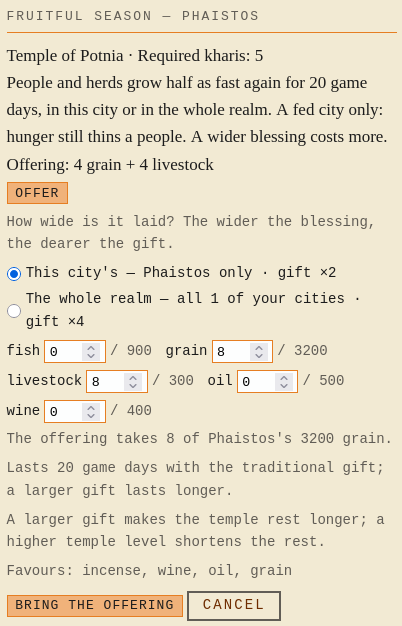
B7-1280-fruitful-chooser · Fruitful Season: this city only / all your citiesB7-1280-production · City drawer, Production tab after Fruitful Season: the blessing line and growth
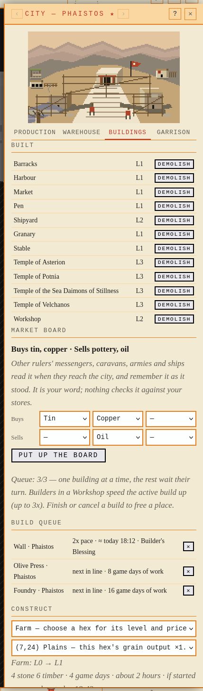
B7-1280-queue · Buildings tab: build queue with the Builder's Blessing marker and the new (earlier) finish time
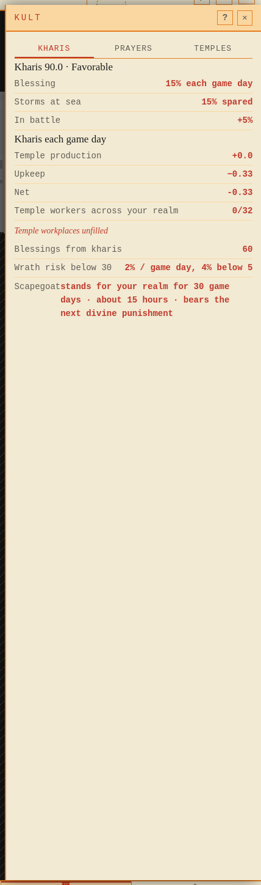
B7-1280-kharis · Kult -> Kharis with the scapegoat's row
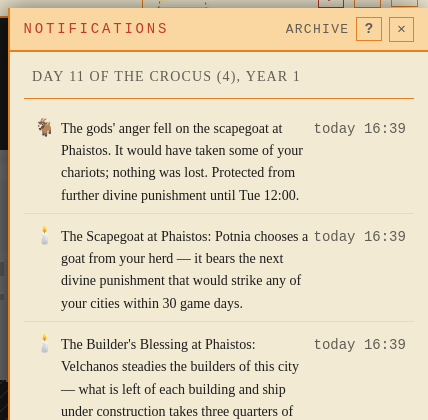
B7-1280-notice · Notifications: the gods' anger fell on the scapegoat (DivinePunishmentAverted)
390 px
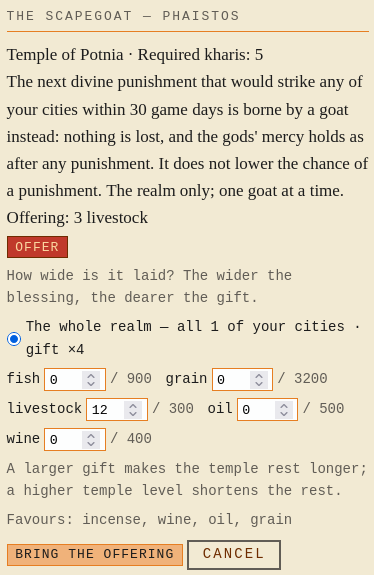
B7-390-goat-chooser · The Scapegoat: one step only (the realm), gift x4 (3 livestock x4 = 12)
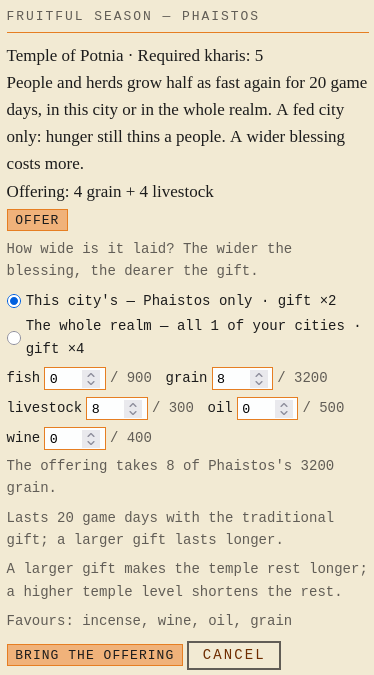
B7-390-fruitful-chooser · Fruitful Season: this city only / all your cities
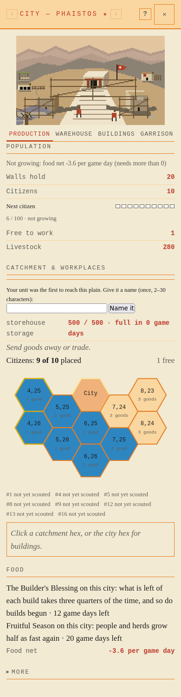
B7-390-production · City drawer, Production tab after Fruitful Season: the blessing line and growth
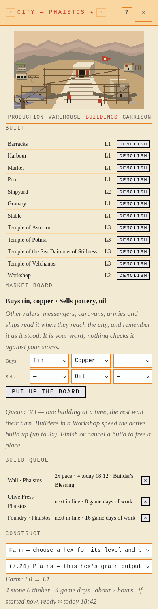
B7-390-queue · Buildings tab: build queue with the Builder's Blessing marker and the new (earlier) finish time
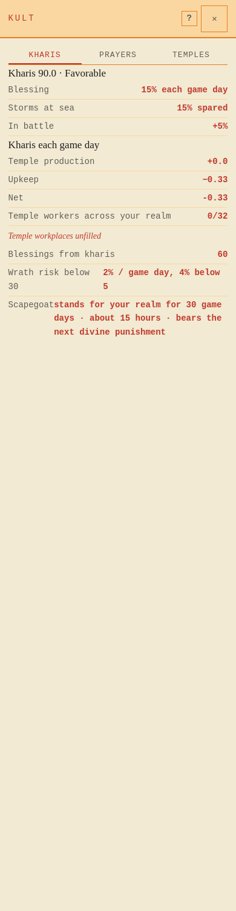
B7-390-kharis · Kult -> Kharis with the scapegoat's row
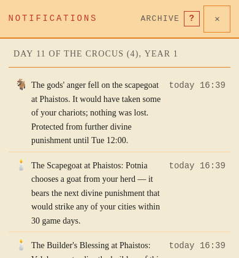
B7-390-notice · Notifications: the gods' anger fell on the scapegoat (DivinePunishmentAverted)
B8 · Prayers 5b: the Bull's Horns and the Thread
Bedöm: The Bull's Horns chooser; the card of a unit that has the horns; and the caravan list in Economy where a land caravan under the Thread says so. Is it clear what is blessed and for how long?
1280 px
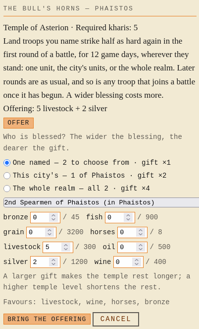
B8-1280-horns-chooser · The Bull's Horns: units to choose from, steps unit / city / realm
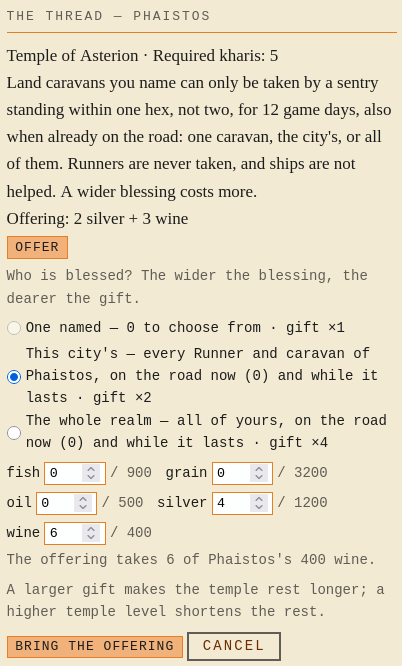
B8-1280-thread-chooser · The Thread: land caravans, city and realm always open
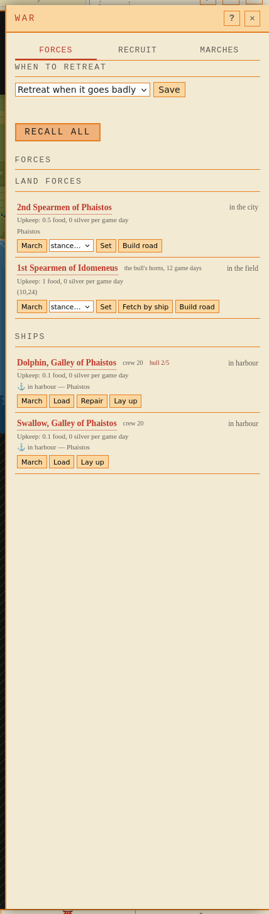
B8-1280-card · War drawer, Forces tab: the unit with the Bull's Horns
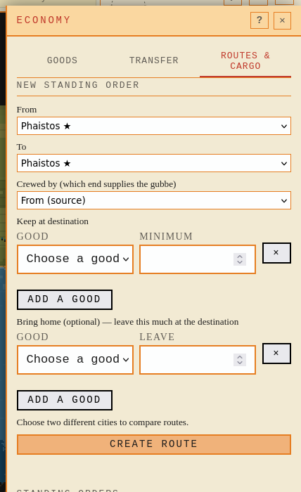
B8-1280-caravan · Economy -> Routes & cargo, "Other cargo in transit": the caravan to Gournia is under the Thread (12 game days) - see the report: this list does not show it
390 px
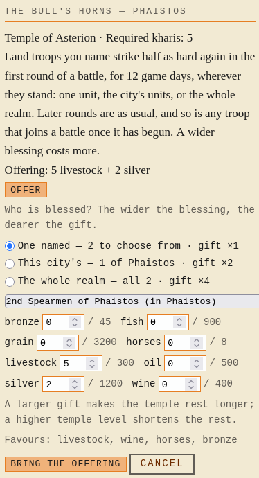
B8-390-horns-chooser · The Bull's Horns: units to choose from, steps unit / city / realmB8-390-thread-chooser · The Thread: land caravans, city and realm always openB8-390-card · War drawer, Forces tab: the unit with the Bull's HornsB8-390-caravan · Economy -> Routes & cargo, "Other cargo in transit": the caravan to Gournia is under the Thread (12 game days) - see the report: this list does not show it
B9 · Prayers 5c: The Walls Fall (city chooser) and the target's two notices
Bedöm: Kult -> Prayers: The Walls Fall names a foreign city whose wall you remember. Then the other side: Nestor, whose city it was, gets WallsOmen at the cast (he stands well with the gods) and WallsFell three game days later; never who prayed. Do the two notices read right, and do they tell him nothing he should not know?
1280 px
B9-1280-chooser · The Walls Fall: the city chooser lists Pylos (held by Nestor, wall level as last seen)B9-1280-owner-notices · Nestor's notifications: the omen at the cast and the fall (the wall lost a level), no name of the one who prayed
390 px
B9-390-chooser · The Walls Fall: the city chooser lists Pylos (held by Nestor, wall level as last seen)B9-390-owner-notices · Nestor's notifications: the omen at the cast and the fall (the wall lost a level), no name of the one who prayed
B10 · Prayers 5d: the Bird Oracle
Bedöm: The Bird Oracle chooser (Cities / Named places); the map under the oracle day, where the area around Pylos is live with foreign forces in sight; and the day after, when it is grey memory. Is the difference between live and memory unmistakable?
1280 px
B10-1280-chooser · The Bird Oracle: optgroups Cities (Phaistos, remembered Pylos, Kydonia) and Named places (Alpheios)B10-1280-during · Map during the oracle day, centred on Pylos: live sight over the place, Nestor's unit next to the city in sightB10-1280-after · The day after (the sight has ended): the same place as grey memory, no live units
390 px
B10-390-chooser · The Bird Oracle: optgroups Cities (Phaistos, remembered Pylos, Kydonia) and Named places (Alpheios)B10-390-during · Map during the oracle day, centred on Pylos: live sight over the place, Nestor's unit next to the city in sightB10-390-after · The day after (the sight has ended): the same place as grey memory, no live units
B11 · keryx-release: the notice "A new keryx is out"
Bedöm: The KeryxReleased notice in Notifications, written by the real announce tool: text with the commit and a Download link. Is it noticeable as news and not as an alarm, and does the link read as a link?
1280 px
B11-1280-notice · Notifications: KeryxReleased
390 px
B11-390-notice · Notifications: KeryxReleased
Kunde inte fångas
B8 (Thread in the web): Not a missing picture: the web shows no Thread on any live caravan list (see the report).